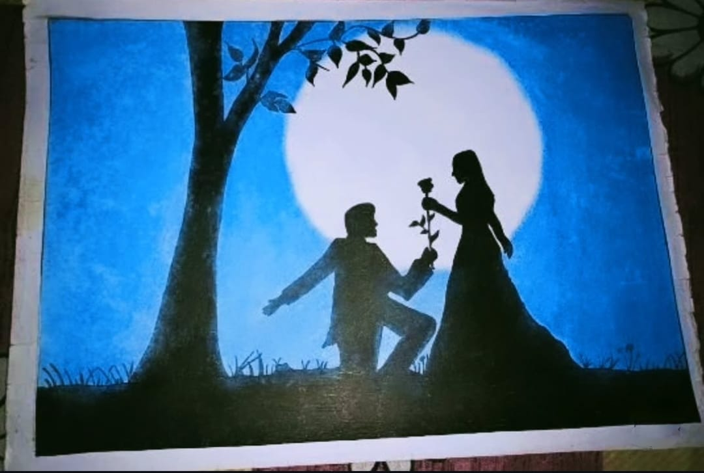

Moonlight Connections

Medium: Oil Pastel Art
Year: 2021
This Artwork Represents Moonlight Connections In A Detailed Oil Pastel Art Style,
Moonlight Connections Captures A Quiet Yet Deeply Emotional Moment Shared Beneath The Soft Glow Of The Moon. The
Silhouettes Of Two Figures Meeting In A Calm Natural Setting Reflect A Bond That Goes Beyond Words, Where Emotions
Are Felt Rather Than Spoken. The Deep Blue Background And The Gentle Moonlight Create A Peaceful Atmosphere,
Symbolizing Hope, Trust, And Togetherness. The Surrounding Trees Frame The Scene Like Silent Witnesses, Adding A
Sense Of Protection And Intimacy To The Moment. This Artwork Was Completed In Approximately 1.5 Hours, During Which
Every Detail Was Carefully Shaped To Balance Light And Shadow. More Than Just An Illustration, This Piece Represents
A Fleeting Yet Meaningful Connection—One That Feels Timeless, Personal, And Open To Interpretation For Every Viewer
Who Experiences It.